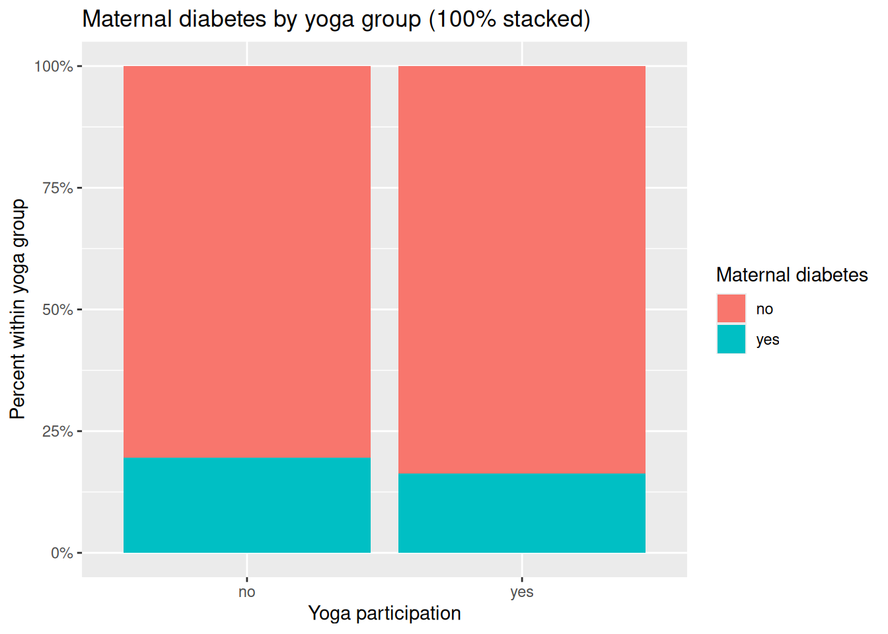
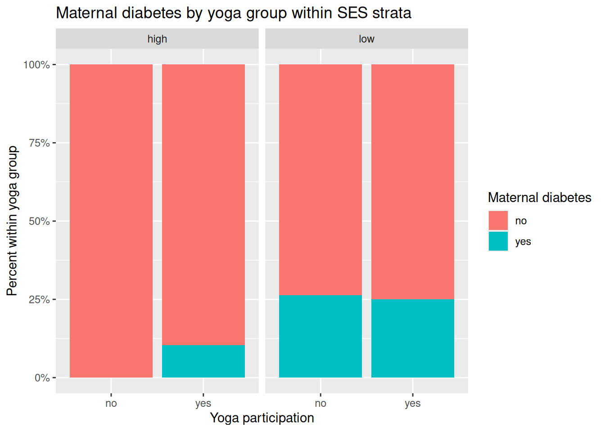

Code
flowchart LR
SES[SES category]
Yoga[Second-trimester yoga]
GDM[Gestational diabetes]
SES --> Yoga
SES --> GDM
Yoga --> GDMSTAT 109 illustrative sample
This page is a worked example for the structure of Project 4. It uses one specific causal question. Your submission must answer your assigned question, not this one.
Assigned question used in this sample project. Among pregnant people in the second trimester, does participation in a structured prenatal yoga program affect whether they develop gestational diabetes by delivery, compared with usual prenatal care without that program?
Variables. Explanatory: Second-trimester participation in the structured prenatal yoga program offered by the study, recorded as Yes (attended at least one session/week on average between weeks 14 to 27) or No (did not participate in that program). Response: Gestational diabetes by delivery, Yes if the medical record documents a GDM diagnosis using the clinic’s standard criteria (e.g. abnormal oral glucose tolerance test or equivalent), No otherwise.
Observational units. Each pregnancy of an enrolled participant who delivers at a participating site during the study window. One row = data for one pregnant individual’s pregnancy.
Means or proportions? A difference in proportions. Both variables are binary, so means are not the primary summary for the response variable.
Hypotheses. Let \(p_1\) be the population proportion who develop GDM among those with second-trimester program participation, and \(p_2\) the population proportion with GDM among those without participation. \(H_0\): \(p_1 = p_2\) (no difference in GDM rates). \(H_a\): \(p_1 \neq p_2\) (two-sided alternative). Here 1 = yoga program, 2 = no program.
RCT. Enroll eligible people in the second trimester; obtain consent then randomly assign to structured prenatal yoga + usual care vs usual care alone (same visit schedule aside from yoga). Follow through delivery; abstract GDM from records using the prespecified definition.
RCT: two explanations. If arms differ statistically: (i) a real effect of assignment (yoga program) on GDM risk, or (ii) by chance, random variation under \(H_0\).
Observational study. Prospective cohort: recruit prenatal patients at weeks 14 to 18; record yoga participation (yes/no per operational definition) from self-report and/or attendance logs; follow through delivery and record GDM from charts. No randomization of yoga, people choose to participate it in or not without being influenced by this study.
Observational: three explanations. A difference in GDM rates could be due to (i) confounding (another variable affects both yoga and GDM), (ii) chance, or (iii) a causal effect of yoga on GDM.
Confounding and DAG. Socioeconomic status (SES) (e.g. high vs lower SES based on household income/education): higher SES can be associated with higher uptake of optional prenatal yoga (time, transportation, program access) and lower GDM risk through baseline health and access to resources.
flowchart LR
SES[SES category]
Yoga[Second-trimester yoga]
GDM[Gestational diabetes]
SES --> Yoga
SES --> GDM
Yoga --> GDMTwo sentences to explain: People with higher SES may be more likely to enroll in optional yoga because of access and schedule flexibility. SES can also be related to baseline nutrition, preventive care, and other factors connected to GDM risk, so crude yoga-vs-GDM comparisons can be confounded unless SES is addressed (e.g. subclassification).
prop.test on the two counts or chisq.test on the 2×2 table of counts. Conditions: independent pregnancies for Pearson chi-squared and expected counts ≥ 5 in all cells.The chunks below belong in a notebook with set.seed(), simulation, then analysis.
library(tidyverse)# Fictional data only, for teaching structure, not medical advice.
set.seed(109)
n <- 100
# Simulate SES (40% high, 60% low)
SES <- sample(c("high", "low"), size = n, replace = TRUE, prob = c(0.4, 0.6))
# Simulate yoga participation based on SES:
# high SES more likely to participate
p_yoga <- ifelse(SES == "high", 0.7, 0.2)
yoga <- ifelse(rbinom(n, size = 1, prob = p_yoga) == 1, "yes", "no")
# Simulate maternal diabetes based only on SES:
# true causal effect of yoga is zero in the data-generating process
p_diabetes <- ifelse(SES == "high", 0.10, 0.30)
maternal_diabetes <- ifelse(rbinom(n, size = 1, prob = p_diabetes) == 1, "yes", "no")
# People in rows, variables in columns
study_data <- data.frame(
SES = SES,
yoga = yoga,
maternal_diabetes = maternal_diabetes
)
# Show the raw AI-style output (people in rows, three variables in columns)
head(study_data)
glimpse(study_data)tab_counts <- study_data |>
count(yoga, maternal_diabetes, name = "n")
tab <- tab_counts |>
pivot_wider(
names_from = maternal_diabetes,
values_from = n,
values_fill = 0
) |>
tibble::column_to_rownames("yoga") |>
as.matrix()
tab_counts
tabstudy_data |>
count(yoga, maternal_diabetes) |>
ggplot(aes(x = yoga, y = n, fill = maternal_diabetes)) +
geom_col(position = "fill") +
scale_y_continuous(labels = scales::percent_format()) +
labs(
title = "Proportion with maternal diabetes by second-trimester yoga group",
x = "Yoga participation",
y = "Percent within yoga group",
fill = "Maternal diabetes"
)study_data |>
count(yoga, maternal_diabetes, SES) |>
ggplot(aes(x = yoga, y = n, fill = maternal_diabetes)) +
geom_col(position = "fill") +
facet_wrap(~ SES) +
scale_y_continuous(labels = scales::percent_format()) +
labs(
title = "Proportion with maternal diabetes by yoga group, within SES strata",
x = "Yoga participation",
y = "Percent within yoga group",
fill = "Maternal diabetes"
)chi <- chisq.test(tab)
chi
chi$expected# Compare maternal diabetes rate in yes vs no yoga groups
by_arm <- study_data |>
group_by(yoga) |>
summarise(x = sum(maternal_diabetes == "yes"), n = n(), .groups = "drop") |>
arrange(yoga)
prop.test(x = by_arm$x, n = by_arm$n, correct = FALSE)study_data |>
group_by(SES, yoga, maternal_diabetes) |>
summarize(n = n(), .groups = "drop_last") |>
mutate(prop_within_yoga = n / sum(n)) |>
ungroup()Interpretation: In this simulation, the true causal effect of yoga is zero; any crude yoga, diabetes association is generated by SES confounding plus random variation. A small p-value from the crude 2×2 test only addresses the “by chance” explanation under test assumptions, so inspect SES-stratified summaries/plots (subclassification) before making causal claims.
Introduction and purpose. One of my classmates in STAT 109 asked the research question “Does second-trimester structured prenatal yoga relate to gestational diabetes by delivery?” This report gives a practical plan for collecting and analyzing data. I also provide sample R code, tested it on simulated data, so that my classmate can run my recommended analysis on real dataset.
Plan to collect data. Observational units are pregnancies (one row per pregnancy). The explanatory variable is yoga-program participation (Program vs Usual care, defined by attendance during weeks 14 to 27). The response is gestational diabetes by delivery (Yes/No from a fixed chart definition). Because an RCT may be infeasible, this plan uses an observational cohort and explicitly records a likely confounder (SES category at intake) for subclassification.
Plan to analyze data. For binary explanatory and binary response variables, use a 2×2 table plus grouped/stacked bar plots and then prop.test to obtain a p-value and confidence interval for the difference in proportions of diabetes. This test assumes independence of pregnancies and expected counts in each group of more than 5. The null and alternative hypotheses for this test are \(H_0: p_1 = p_2\) vs \(H_a: p_1 \neq p_2\), where \(p_1\) is the population GDM proportion in Program and \(p_2\) is the population GDM proportion in Usual care. Since SES may confound a direct comparison of diabetes and yoga, I recommend also showing subclassified summaries and faceted plots by SES group
Plan to make an appropriate conclusion. In observational data, an observed difference in sample proportions of diabetes between the yoga and usual care groups can reflect causal effect, confounding, or chance. If we use significance level 0.05, a Type I error is concluding a program-vs-usual-care difference in population GDM rates when no true difference exists; reduce this by lowering the level of significance used to determine whether a p-value is large or small (e.g., \(\alpha= 0.01\) means a maximum probability of Type I error is 0.01). A Type II error is missing a true difference; reduce this by increasing sample size.
Simulated results In the simulated dataset, the crude 2×2 comparison produced a test result and a confidence interval for the difference in proportions. These outputs only address the “by chance” explanation under test assumptions; SES-stratified plots/tables are used to check whether confounding could explain part of the crude difference. Therefore, in a real observational study, causal language should stay cautious unless design/analysis convincingly addresses confounding.
Crude counts (yoga × maternal diabetes).
yoga maternal_diabetes n
1 no no 41
2 no yes 10
3 yes no 41
4 yes yes 8100% stacked bar plot (overall).

100% stacked bar plot by SES (subclassification display).

prop.test output (includes p-value and confidence interval).
2-sample test for equality of proportions with continuity correction
data: by_arm$x out of by_arm$n
X-squared = 0.027762, df = 1, p-value = 0.8677
alternative hypothesis: two.sided
95 percent confidence interval:
-0.1374715 0.2030977
sample estimates:
prop 1 prop 2
0.1960784 0.1632653